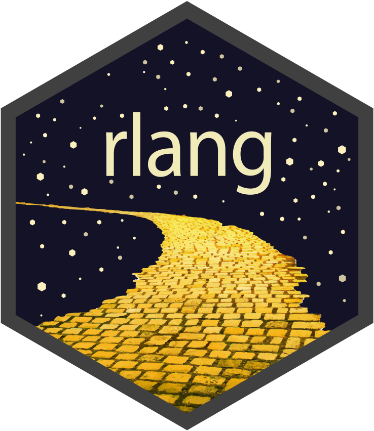

Advanced R Tips and Tricks

Course Overview
R is widely used for data analysis and statistics, and from a programming perspective R is weird1! The quirks of R is shocking to most programmers, but the language’s flexibility is what makes it great for statistics and data. In this three-hour workshop you’ll learn just how quirky R can be, we’ll have some fun poking around R, and you’ll leave with some useful tips and tricks for harnessing R’s oddities in your analysis or packages.
Ever wondered what a ‘closure’ is and why it isn’t subsettable? Why do we need tibble when we have data.frame? How does tidy evaluation make the tidyverse so easy to use for analysis, but so difficult to automate? Why is it good (for R) to be lazy?! I’ll answer all of these questions and more, along with any of your burning R questions.
This workshop is part of the WOMBAT 2024 workshop’s tutorials, and will run in-person in Melbourne on October 22nd 2024.
Registration
Registration costs AU$150 (discounted to AU$75 for students), tickets are available at https://events.humanitix.com/wombat-2024-day-1.
Please note that this is an advanced workshop for existing R users. New users to R should consider other workshops.
Learning objectives
Participants will learn how to:
- Understand (and embrace) the quirks of using R
- Appreciate how ‘helpful’ R tries to be with vectors, recycling and typing
- Use
vctrsto avoid common problems with vectors, recycling and typing - Write code that writes and runs code (metaprogramming)
- Use non-standard evaluation for good (and evil) code design
Educators
Instructor

Mitchell O’Hara-Wild (he/him) is an award-winning teaching associate at Monash University and consultant at Nectric with particular expertise in forecasting, data analysis and statistical computing using R. He is a prominent contributor to the R package ecosystem, developing many widely used packages for writing documents (vitae, icons), teaching (moodlequiz), visualising data (ggquiver, feasts) and forecasting (fable, forecast). Mitchell is passionate about designing friendly software that is easy to learn and use.


Preparation
The workshop will provide a glimpse into advanced R, offering many useful tips and tricks for advanced R usage in analysis and package development.
All R users will have fun and learn some useful tips in this workshop, however a strong familiarity with R and/or other programming languages will help get the most out of this workshop. The workshop assumes that participants are comfortable with control flow (if statements and for loops).
Before the workshop I recommend that you read through the ‘Foundations’ chapter of ‘Advanced R’ by Hadley Wickham: https://adv-r.hadley.nz/foundations-intro.html
Required equipment
Please bring your own laptop capable of running R.
Required software
To be able to complete the exercises of this workshop, please install a suitable IDE (such as RStudio), a recent version of R (4.1+) and the following packages.
- R developer packages
- rlang
- vctrs
- pryr
- lobstr
The following code will install the main packages needed for the workshop.
install.packages(c("rlang", "vctrs", "pryr", "lobstr))Please have the required software installed and pre-work completed before attending the workshop.
Footnotes
Watch Kelly Bodwin’s UseR! keynote Keep R weird↩︎